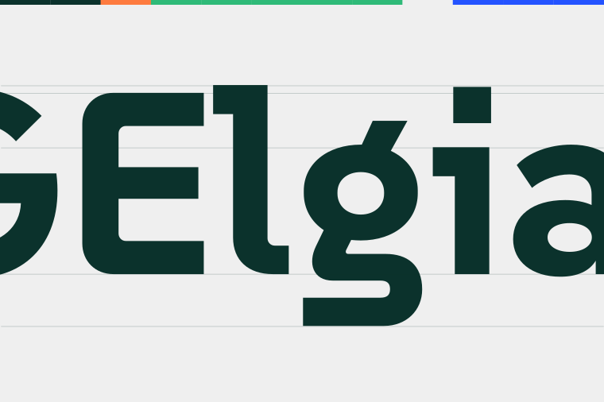
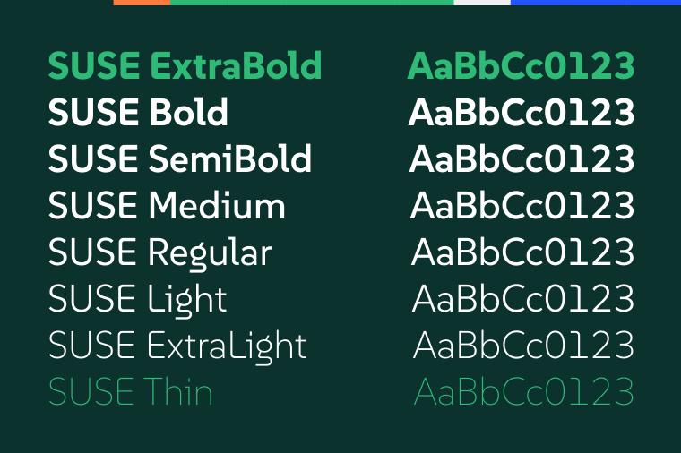

SUSE was created to reflect the innovative and open-source spirit of the SUSE company. It provides clarity and legibility, making it ideal for both digital and print media. The hybrid design combines geometric precision with monospaced stability, ensuring a modern and efficient aesthetic.
To contribute, see github.com/SUSE/suse-font.
SUSE is a sans serif typeface designed by René Bieder, embodying a unique hybrid between geometric and monospaced features. It captures the essence of SUSE, a company renowned for its open-source solutions. This versatile typeface family includes the following styles: Thin, ExtraLight, Light, Regular, Medium, SemiBold, Bold, and ExtraBold.
 It stands out with its distinctive design, perfect for modern, open-source, and tech-focused projects. Its variety of weights allows for flexibility in design, from headlines to body text, ensuring consistency and harmony across different use cases. SUSE supports over 200 Latin-based languages